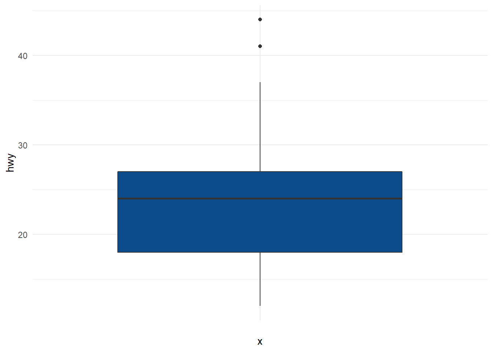

Chapter 5 Outlier detection in Time series
5.1 Introduction
5.1.1 Definition
An outlier ia a value or an observation that is distant from other observations, a data point that differ significantly from other data points. A widely used deinition for the concept of outier has been provided by Hawkins: “An observation which deviates so much from other observations as to arouse suspicions that it wasgenerated by a different mechanism.”. It sometimes makes sense to fromally distinguish two classes of outliers: Extreme values and mistakes.
Virtually all outlier detection algorithms create a model of the normal patterns in the data, and then compute an outlier score of a given data point on the basis of the deviations from these patterns. The selected model make different assumptions about the “normal” behavior of the data. The outlier score of a data point is then computed by evaluating the quality of the fit between the data points and the model. In practice, the choice of the model is often dictated by the analyst‘s understanding of the kinds of deviations relevant to an application.
5.1.2 Taxonomy
Outlier detection techniques in time series data vary depending on the input data, the outlier type , and the nature of the method.
5.1.2.1 Input data: Univariate vs Multivariate
Outlier detection methods may differ depending on the charcteristics of time series data: Univariate time series VS Mutivariate time series. A univariate detection method only considers a single time-dependent variable, whereas a multivariate detection method is able to simultaneously work with more than one time-dependent variable
5.1.2.2 Outlier type
Outlier detection methods may differ depending on the type pf ouliers:
- Point outlier: A point outlier is a datum that behaves unusually in a specific time instant when compared either to the other values in the time series (global outlier) or to its neighboring points (local outlier).
- Subsequences: This term refers to consecutive points in time whose joint behavior is unusual, although each observation individually is not necessarily a point outlier
- Time Series: Entire time series can also be outliers, but they can only be detected when the input data is a multivariate time series.
5.1.2.3 Detection method
Model-based: The most popular and intuitive definition for the concept of point outlier is a point that significantly deviates from its expected value. Therefore, given a univariate time series, a point at time t can be declared an outlier if the distance to its expected value is higher than a predefined threshold. If \(\hat{x}_t\) is obtained using previous and subsequent observations to \(x_t\) (past, current, and future data), then the technique is within the estimation model-based methods. In contrast, if \(\hat{x}_t\) is obtained relying only on previous observations to \(x_t\) (past data), then the technique is within the prediction model-based methods.
- Estimation:
- Median Absolute Deviation (MAD)
- Exponentially Weighted Moving Average (EWMA) method
- Extreme Studentized Deviate (ESD)
- STL decomposition
- Prediction:
- ARIMA model
- ARIMA model within a sliding window to compute the prediction interval, so the parameters are refitted each time that the window moves a step forward.
- Extreme value theory
- Estimation:
Density-based: Techniques within this group consider that points with less than \(k\) neighbors are outliers: using sliding windows.
Histogramming
5.1.3 Types of anomalies in time series
- Additive outliers: For example, we are tracking users at our website and we see an uexpected growth of users in a short period of time that looks like a spike.
- Temporal changes: For example, when our server goes down and you see zero or a really low number of users for some short period of time.
- Level shifts: In the case that you deal with some conversion funnel, there could be a drop in a conversion rate. If this happens, the target metric usually doesn’t change the shape of a signal, but rather its total value for a period.
5.1.4 Methodological Approaches
- Statistical based methods
- Forecasting-based approaches: In thi methodology, a prediction is performed with a forecasting model for the next time period and if forecasted value is out of confidence interval, the sample is flagged as anomaly.
- Neural Network Based Approaches
- Clustering Based Approaches: The idea behind usage of clustering in anomaly detection is that outliers don’t belong to any cluster or has their own clusters.
- Proximity Based Approaches
- Tree Based Approaches
- Dimension Reduction Based Approaches
5.1.4.1 How to select the best approache
Before starting the study, answer the following questions:
- How much data do you have retroactively?
- Univariate or multivariate data?
- What is the frequency of making anomaly detection?(near real time, hourly, weekly?)
- The number of anomalies is another concern. Most anomaly detection algorithms have a scoring process internally, so you are able to tune the number of anomalies by selecting an optimum threshold. Most of the time, clients dont want to be disturbed with too many anomalies even if they are real anomalies. Therefore, you might need a separate false positive elimination module.
5.2 Statistical-based approaches
5.2.1 Descriptive statistics
5.2.1.1 Histogram
A basic way to detect outliers is to draw a histogram of thed ata
library(ggplot2)
dat <- ggplot2::mpg
ggplot(dat) +
aes(x = hwy) +
geom_histogram(bins = 30L, fill = "#0c4c8a") +
theme_minimal()
5.2.1.2 Boxplot: IQR (Interquartile range)
A boxplot helps to visualize a quantitative variable by dsplaying 4 common location summary (min, median, first and third quartiles, max) and any observation that was classified as a suspected outlier using the interquartile range (IQR) criteria.
The IQR criteria means that all obsevations above \(q_{0.75} + 1.5 * IQR\) or below \(q_{0.25} - 1.5 * IQR\) (where \(q_{0.75}\) and \(q_{0.25}\) correspond to first and third quartile respectively, and \(IQR\) is the difference between the third and first quartile) are considered as potential outliers..
ggplot(dat) +
aes(x = "", y = hwy) +
geom_boxplot(fill = "#0c4c8a") +
theme_minimal()
5.2.1.3 Hampler filter
- Hampler filter consists of considering as outliers the values ourside the interval \((I)\) formed by the median, plus or minus 3 median absolute deviations $(MAD)*:
\[I=[median - 3 * MAD; median + 3 * MAD]\]
where \(MAD\) is the median obsolute deviation and is defined as the median of the absolute deviations from the data’s median
\[MAS = median(|X_{i}-med_{X}|)\]
# lower_bound
lower_bound <- median(dat$hwy) - 3 * mad(dat$hwy)
lower_bound## [1] 1.761# upper_bound
upper_bound <- median(dat$hwy) + 3 * mad(dat$hwy)
upper_bound## [1] 46.239# outlier
outlier_ind <- which(dat$hwy < lower_bound | dat$hwy > upper_bound)
outlier_ind## integer(0)5.2.2 Statistical tests
5.2.2.1 Grubbs’s test
5.2.2.2 Dixon’s test
5.2.2.3 Rosner’s test
5.2.2.4 Z score
Z-scores can quantify the usefulness of an observation when your data follow the normal distribution. Z-scores are the number of standard deviations above and below the mean that each value falls. For example, a z-score of 2 indicates that an observation is two standard deviations above the average while a z-score of -2 signifies it is two standard deviations below the mean. To calculate a z-score for an observation, take the raw measurement, substract the mean, and divide by the standard deviation. Mathematically, the formule for that process is the following:
\[ Z = \frac{X - \mu}{\sigma}\]
where \(\mu\) is the mean of the population and \(\sigma\) is the standard deviation of the population. The further away an observation’s z-score is from zero, the more unusual it is. A standard cut-off value for finding outliers are z-scores of +/- 3 further from zero. In a population that follows the normal distribution, z-score values more extreme than +/- 3 have a probability of 0.0027 (2*0.00135), which is about 1 in 370 observations. However if your data don’t follow the normal distribution, this approach might not be accurate.
5.2.3 STL decomposition
STL stands for seasonal-trend decomposition procedure based on Loess. This technique gives you an ability to split your time series signal into three parts: seasonal, trend and residue.
The leading implementation of this approach is Twitter’s Anomaly Detection library. It uses Generalized Extreme Student Deviation test to check if a residual point is an outlier.
5.2.4 Generalized ESD Test for Outliers
https://www.itl.nist.gov/div898/handbook/eda/section3/eda35h3.htm
5.2.5 Extreme Studentized Deviate Technique (ESD)
the Extreme Studentized Deviate (ESD) test is employed to make the decision: the null hypothesis considered is that there are no outliers, whereas the alternative is that there are up to k. Regardless of the temporal correlation, the algorithm computes k test statistics iteratively to detect k point outliers. At each iteration, it removes the most outlying observation (i.e., the furthest from the mean value).
5.3 Forecasting-based approaches
5.3.1 Moving Average Method
In this method with the help of the moving average of past data, present-day value is estimated. A moving average can be exponential Moving average or simple Moving aberage. The expoential moving average gives more weight to recent data.
5.3.2 ARMA
5.3.3 Prophet
Prophet” was Published by Facebook which uses additive regression model. This model helps in detecting anomalies. Prophet automatically detects changes in trends by selecting change points from the data and also do some modification in seasonal components (year, month) by some techniques like Fourier Transform.
5.4 Neural Network Based Approaches
5.4.1 Autoencoder
Autoencoder is an unsupervised type neural networks, and mainly used for feature extraction and dimension reduction. At the same time, it is a good option for anomaly detection problems. Autoencoder consists of encoding and decoding parts. In encoding part, main features are extracted which represents the patterns in the data, and then each samples is reconstructed in the decoding part. The reconstruction error will be minumum for normal samples. On the other hand, the model is not able to reconstruct a sample that behaves abnormal, resulting a high reconstruction error. So, basically, the higher reconstruction error a sample has, the more likely it is to be an anomaly.
5.5 Clustering Based Approaches
5.5.1 Kmeans
5.5.2 Gaussina Mixture Model (GMM)
It attemps to find a mixture of a finite number of Gaussian distributions inside the dataset.
5.5.3 DBSCAN
DBSCAN is a density based clustering algorithm. It determines the core points in the dataset which contains at least min_samples around it within epsilon distance, and creates clusters from these samples. After that, it finds all points which are densely reachable(within epsilon distance) from any sample in the cluster and add them to the cluster. And then, iteratively, it performs the same procedure for the newly added samples and extend the cluster. DBSCAN determines the cluster number by itself, and outliers samples will be assigned as -1. In other words, it directly serves for anomaly detection. Note that, it might suffer from perfromance issues with large sized datasets.
5.6 Proximity Based Approaches
5.6.1 K-Nearest neighbor:
The first algorithm that come to mind is k-nearest neighbor(k-NN) algorithm. The simple logic behind is that outliers are far away from the rest of samples in the data plane. The distances to nearest negihbors of all samples are estimated and the samples located far from the other samples can be flagged as outlier. k-NN can use different distance metrics like Eucledian, Manhattan, Minkowski, Hamming distance etc.
5.6.2 Local Outlier Factor (LOF)
It identifies the local outliers with respect to local neighbors rather than global data distribution. It utilizes a metric named as local reachability density(lrd) in order to represents density level of each points. LOF of a sample is simply the ratio of average lrd values of the sample’s neighbours to lrd value of the sample itself. If the density of a point is much smaller than average density of its neighbors, then it is likely to be an anomaly.
5.7 Tree Based Approaches
5.7.1 Isolation Forest
Isolation Forest is a tree based, very effective algorithm for detecting anomalies. It builds multiple trees. To build a tree, it randomly picks a feature and a split value within the minimums and maximums values of the corresponding feature. This procedure is applied to all samples in the dataset. And finally, a tree ensemble is composed by averaging all trees in the forest. The idea behind the Isolation Forest is that outliers are easy to diverge from rest of the samples in dataset. For this reason, we expect shorter paths from root to a leaf node in a tree(the number of splittings required to isolate the sample) for abnormal samples compared to rest of the samples in dataset.
5.8 Dimension Reduction Based Approaches
5.8.1 Principal Component Analyses (PCA)
Principal Component Analyses (PCA) is mainly used as a dimension reduction method for high dimensional data. In a basic manner, it helps to cover most of the variance in data with a smaller dimension by extracting eigenvectors that have largest eigenvalues. Therefore, it is able to keep most of the information in the data with a very smaller dimension.
While using PCA in anomaly detection, it follows a very similar approach like Autoencoders. Firstly, it decomposes data into a smaller dimension and then it reconstructs data from the decomposed version of data again. Abnormal samples tend to have a high reconstruction error regarding that they have different behaviors from other observations in data, so it is diffucult to obtain same observation from the decomposed version. PCA can be a good option for multivariate anomaly detection scenarios.
5.9 References
- https://medium.com/learningdatascience/anomaly-detection-techniques-in-python-50f650c75aaf
- A review on outlier/anomaly detection in time series data: https://arxiv.org/pdf/2002.04236.pdf